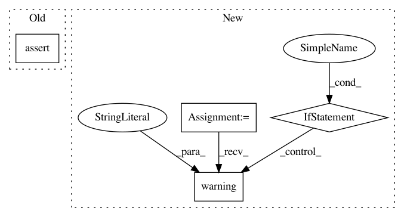

4ab80eafb9d79ffa2f1ba149fc48d1fdd037c14a,python/ray/parameter.py,RayParams,_check_usage,#RayParams#,193
Before Change
"The redirect_output argument is deprecated.")
if self.use_pickle:
assert (version.parse(
np.__version__) >= version.parse("1.16.0")), (
"numpy >= 1.16.0 required for use_pickle=True support. "
"You can use ray.init(use_pickle=False) for older numpy "
"versions, but this may be removed in future versions.")
After Change
raise DeprecationWarning(
"The redirect_output argument is deprecated.")
if version.parse(np.__version__) < version.parse("1.16.0"):
logger.warning("Using ray with numpy < 1.16.0 will result in slow "
"serialization. Upgrade numpy if using with ray.")
In pattern: SUPERPATTERN
Frequency: 5
Non-data size: 4
Instances
Project Name: ray-project/ray
Commit Name: 4ab80eafb9d79ffa2f1ba149fc48d1fdd037c14a
Time: 2020-03-09
Author: ed.nmi.oakes@gmail.com
File Name: python/ray/parameter.py
Class Name: RayParams
Method Name: _check_usage
Project Name: ilastik/ilastik
Commit Name: 56baff8f4c7513db777bbf9fa8ec3304bd4b0a45
Time: 2017-11-21
Author: k-dominik@users.noreply.github.com
File Name: ilastik/applets/base/appletSerializer.py
Class Name: SerialPickleableSlot
Method Name: _getValue
Project Name: tensorpack/tensorpack
Commit Name: 55b2e0f1a613e3199870bdb46afbaa3944ff5719
Time: 2020-07-11
Author: ppwwyyxx@users.noreply.github.com
File Name: tensorpack/callbacks/prof.py
Class Name: GPUMemoryTracker
Method Name: _before_train
Project Name: cmu-db/ottertune
Commit Name: 8cec62160ffd56f90c781f7524f643b95896c455
Time: 2020-01-08
Author: dvanaken@cs.cmu.edu
File Name: server/website/website/utils.py
Class Name: TaskUtil
Method Name: get_task_status
Project Name: NervanaSystems/nlp-architect
Commit Name: 117c2ddb13d4ac975eb77a5ecf826012a7008516
Time: 2018-08-14
Author: jonathan.mamou@intel.com
File Name: solutions/set_expansion/set_expand.py
Class Name: SetExpand
Method Name: __id2term